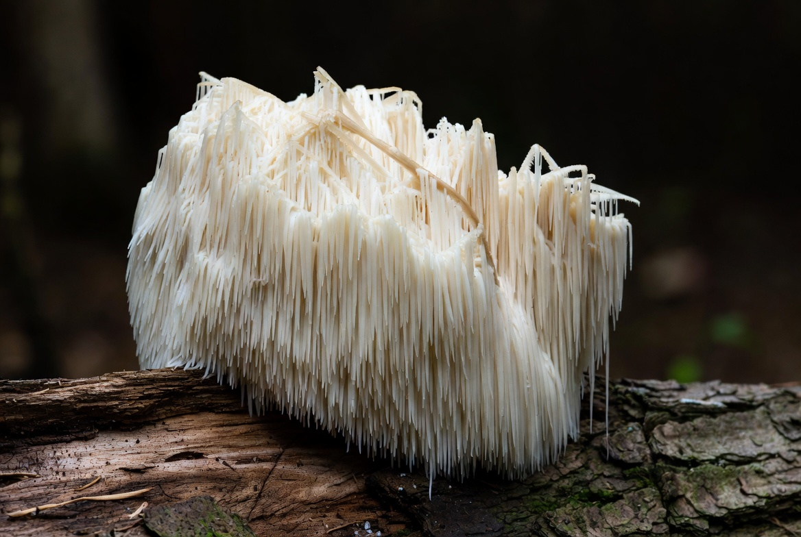
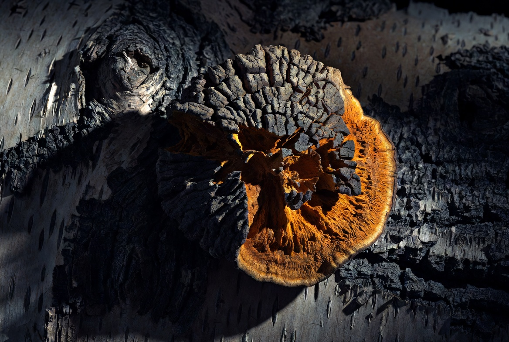
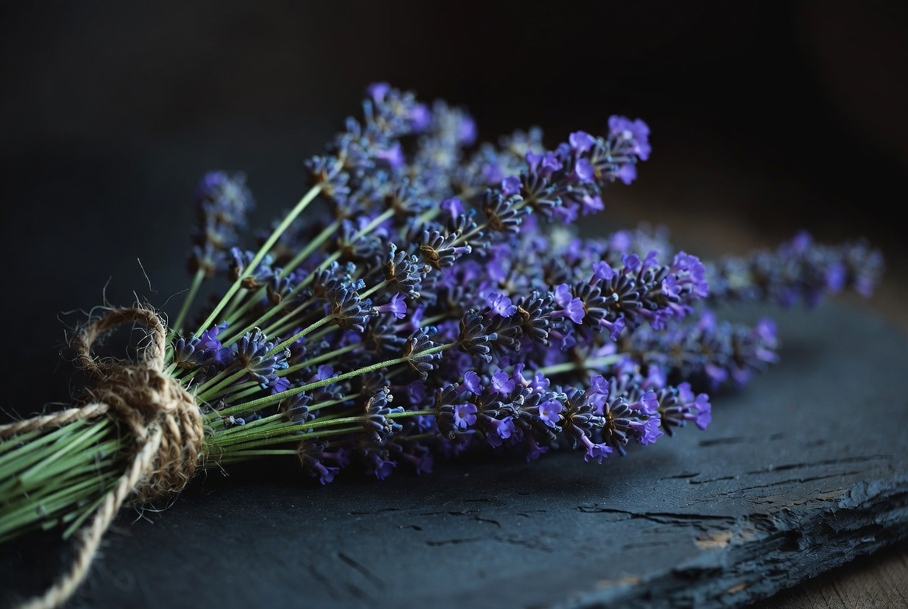
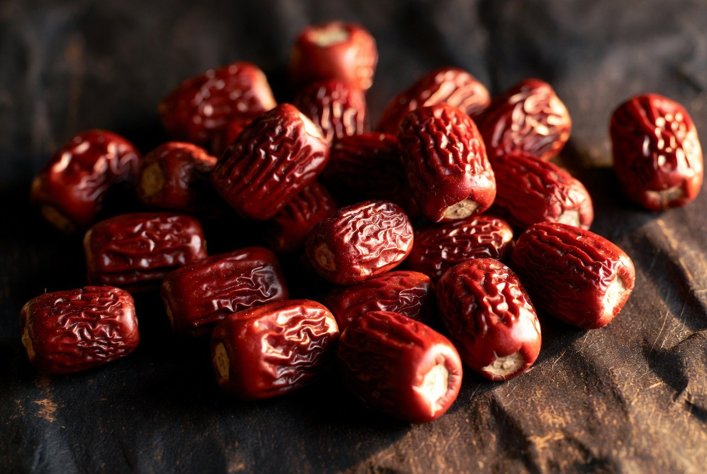
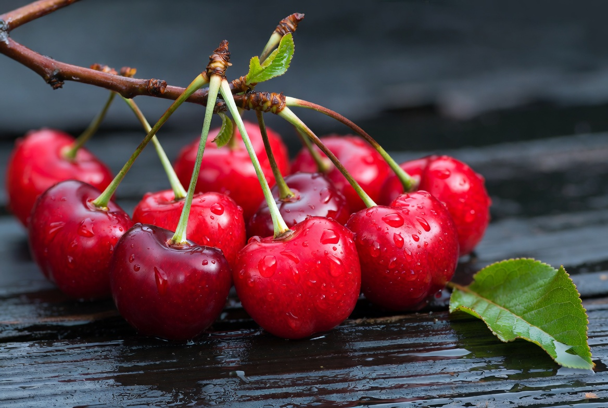
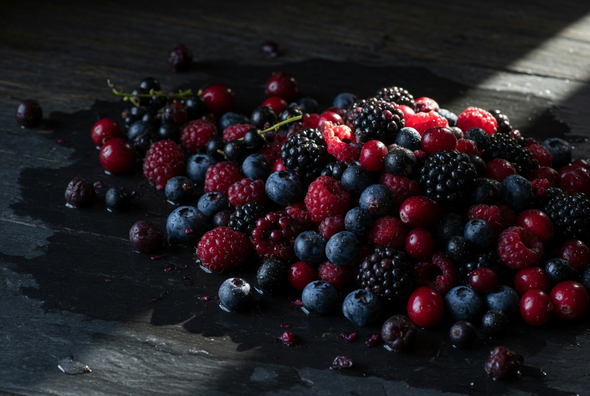
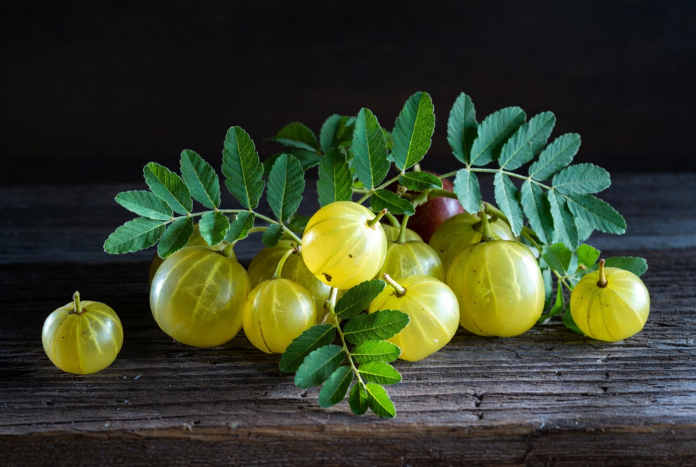

Partnership Proposal · 2026
글로벌 Functional Coffee 시장 분석과 SANS 도입 제안 —
삼성웰스토리 사내카페 메뉴 입점 검토용
01 — Executive Summary
시장 기회
버섯커피는 미국에서 이미 연간 수천억 원 규모를 형성했으며, RYZE 한 브랜드만으로 2025년 연간 약 $300M(약 4,350억 원)에 달합니다(Forbes, 2026.01). 파우더 세그먼트 중심의 D2C 모델로 빠르게 성장하고 있습니다.
기존 브랜드의 한계
현존하는 모든 버섯커피 브랜드는 원두를 배제하지 못했습니다. 버섯의 흙냄새, 카페인 잔존, 용해 불량 — 소비자 리뷰에서 반복되는 세 가지 불만이 여전히 해결되지 않고 있습니다.
SANS의 해법
원두 제로 + 발효로 버섯 이취 완전 제거 + 커피 향미 분자 수준 재현. WBC 챔피언 2명이 공개 인증한 유일한 대체커피입니다. 프리미엄 백화점 식품관 입점 후 오픈 대비 +1,117% 성장하고 있습니다.
삼성웰스토리 사내카페가 지향하는 '임직원 건강과 만족을 높이는 식음 경험'에서, 기존 커피 브랜드들이 하지 못하는 기능성 웰니스 음료 카테고리의 빈자리를 SANS가 정확히 채웁니다. 원두·카페인·설탕 없는 발효 기반 기능성 커피는 건강식 수요가 커지는 사내카페 메뉴 전략과 완벽하게 맞닿아 있습니다.
02 — 글로벌 시장 현황
복수의 글로벌 리서치 기관(Grand View Research, Precedence Research, TechSci Research)이 연 5~6%의 안정적 성장세를 공통으로 예측하고 있습니다. 특히 온라인 채널(CAGR 6.3%)과 사쉐·파우더 세그먼트(CAGR 6.2%)의 성장이 두드러집니다.
| 브랜드 | 아마존 런칭 | 월 검색량 | 월 매출 추산 |
|---|---|---|---|
| RYZE | 2024.04 | 1,410,867 | $3,674,250 |
| 2025년 연 ~$300M 추산 (Forbes) · 2026.01 Target 1,900개 매장 전국 입점 | |||
| Everyday Dose | 2023.07 | 90,530 | $899,700 |
| 2025.12 자사몰 단독 $8.0M · 전분기 대비 +40% 성장 (Grips Intelligence) | |||
| CUPPA | 2024.09 | 85,864 | $494,417 |
| 2024년 9월 런칭 신흥 브랜드 | |||
| Four Sigmatic | 2015 | 77,190 | $344,700 |
| 카테고리 개척자, 성장 정체 | |||
| MUD/WTR | 2023.07 | 23,772 | $56,387 |
| 2024년 자사몰 전년 대비 –50% 급감 | |||
| 카테고리 합계 | 1,752,046 | $5,698,770 · 월 약 82억 원 | |
RYZE는 단 $2.15M(약 31억 원)의 투자로 2025년 연간 약 $300M(약 4,350억 원)의 매출을 달성한 것으로 추산됩니다(Forbes, January 2026). Everyday Dose는 2025년 12월 자사몰 단독으로 $8,014,248(약 116억 원)을 기록, 직전 3개월 대비 40% 성장세를 이어가고 있습니다.
03 — 주요 플레이어 분석
시장 데이터는 버섯커피의 폭발적 성장을 증명합니다. 그러나 수만 건의 소비자 리뷰는 공통된 불만을 드러냅니다. 바로 여기에 SANS가 진입하는 기회가 있습니다.
"Not my type of coffee, and taste like vomit. We held a tasting party. All of my family and friends hated it."Amazon, August 2025
"RYZE but don't shine. From the moment she opened the bag, she was hit with a smell that can only be described as... baby vomit."Amazon, January 2025
"Seems to be false advertising, and probably artificially hyped. I have noticed nothing yet after a week."Amazon, September 2025
"I feel more balanced and less jittery. I genuinely feel sharper and more clear-headed throughout the day."Amazon, November 2025
Amazon 리뷰 크롤링 데이터 기준 · 2025.12 수집
"Taste lives up to its name — MUD. I opened the lid and discovered bugs that had hatched. Not worth my money."Amazon, November 2023
"Grainy taste and if I ever did try pond water I'm sure it tastes like this stuff. It literally feels like dirt in your mouth."Amazon, October 2025
"No earthy or mushroom taste at all! Great hot or cold! Customer for life!"Amazon, November 2025
"Horrible customer service. They charged me for a subscription I never signed up for. Impossible to cancel. Avoid."Amazon / Trustpilot, 2025
2025년 12월 자사몰 단독 $8.0M을 기록했지만, 원두가 포함되어 카페인 부작용을 완전히 해결하지 못했습니다. 고객 서비스와 구독 취소 관련 불만도 반복적으로 등장하는 약점입니다.
| 비교 항목 | SANS | RYZE | MUD/WTR | Everyday Dose |
|---|---|---|---|---|
| 원두 포함 | 원두 Zero | 50%+ 혼합 | 홍차 기반 | 원두 포함 |
| 카페인 | 완전 제로 | 불완전 제거 | 35mg 잔존 | 불완전 제거 |
| 버섯 이취 | 발효로 완전 제거 | 잔존 | 잔존 | 일부 해결 |
| 커피 메뉴 구현 | 아메리카노·에스프레소 완전 재현 | 제한적 | 불가 (코코아 기반) | 부분적 |
| 최근 성과 | 백화점 식품관 오픈 대비 +1,117% | 연 ~$300M, Target 입점 | 자사몰 –50% 급감 | 2025.12 월 $8M |
04 — SANS
| 전략적 투자자 | 15억 | 리테일 그룹 CVC |
| 스톤브릿지벤처스 | 10억 | 국내 주요 VC |
| 디캠프 | 10억 | 스타트업 지원기관 |
| 삼성벤처투자 | 10억 | 삼성웰스토리 연계 |
| IBK기업은행 | 5억 | 스톤브릿지 매칭 |
| 더벤처스 | 3억 | |
| 합계 | 53억 |
초기 투자: 네이버스노우 김창욱, 네이버웹툰 김준구, 라인프렌즈 김성훈 대표
"놀랍게도 커피의 맛뿐 아니라 질감까지 구현했다."
2023 WBC 월드 바리스타 챔피언
"커피 산업을 뒤흔들 혁신이 나타났다."
2024 WBC 월드 바리스타 챔피언
"First I was skeptical. Thanks for proving me wrong!"
2024 싱가포르 컵 테이스터 챔피언
KBS·SBS·중앙일보·헤럴드경제·독일 ProSieben 보도
Coffee Molecular Mapping
커피 향기 분자 100종 이상을 매핑·분류합니다. 화학적으로 합성하기 어려운 분자를 발효 공정으로 자연 생성하여 원두 없이 '분자적 동일성'을 확보합니다.
한국 전통 발효 기술의 현대화
Lactic-acid 발효로 버섯의 흙냄새를 완전히 제거하고 기능성만 추출합니다. pH·온도·시간·효모균주·허브비율 5가지 변수를 정밀 제어해 스페셜티 커피급 다양한 풍미를 구현합니다.
기능성 원료의 자유로운 확장
커피의 맛을 유지하면서 다양한 기능성 성분을 자유롭게 추가할 수 있는 구조입니다. 홍삼·동충하초·노루궁뎅이·영지버섯·콜라겐·아답토젠 등 원료별 유용성을 살리되 발효 공정을 통해 이취 없이 통합되며, 일관된 품질로 관리가 용이합니다.
SANS는 발효 공정 위에 다양한 버섯·허브·기능성 원료를 자유롭게 결합할 수 있습니다. 아래는 삼성웰스토리 사내카페 협업 포뮬러에 적용 가능한 대표 원료들이며, 각각 다음과 같은 기능성으로 알려져 있습니다.
Mushroom · 버섯 원료
검증된 약용 버섯
노루궁뎅이·차가·동충하초·영지·백목이 등 동서양에서 오랫동안 연구·활용되어 온 버섯들. 발효 공정으로 흙냄새가 제거되어 커피와 자연스럽게 결합됩니다.

노루궁뎅이버섯'">노루궁뎅이버섯 Lion's Mane
베타글루칸·헤리세논·에리나신 성분을 함유한 약용 버섯. 인지 기능과 신경계 건강에 도움을 줄 수 있는 원료로 알려져 있으며, 해외에서는 'Brain Mushroom'으로 불리며 웰니스 시장에서 빠르게 자리잡고 있습니다.

차가버섯'">차가버섯 Chaga
시베리아 자작나무에서 자라는 약용 버섯으로, 폴리페놀·SOD·베타글루칸 등 항산화 성분을 함유합니다. 면역과 세포 건강에 도움을 줄 수 있는 원료로 알려져 있으며, 흔히 '버섯의 왕'으로 불립니다.
동충하초 Cordyceps
코디세핀·아데노신을 함유한 전통 약용 버섯. 피로 회복과 지구력에 도움을 줄 수 있는 원료로 알려져 있으며, 동아시아에서 오랫동안 활용되어 온 원료입니다. 카페인 없이 활력을 더하고 싶은 포뮬러에 적합합니다.
영지버섯 Reishi
예로부터 '불로초'라 불려온 약용 버섯. 트리테르페노이드·베타글루칸을 함유하며, 스트레스 완화와 수면의 질, 면역 균형에 도움을 줄 수 있는 원료로 알려져 있습니다. 저녁 시간대 음용 포뮬러에 적합합니다.
백목이버섯 Tremella · Snow Mushroom
'은이버섯'으로도 불리는 약용 버섯. 천연 다당체와 보습 성분이 풍부해 피부 수분과 탄력에 도움을 줄 수 있는 원료로 알려져 있으며, 해외에서는 'Beauty Mushroom'으로 뷰티·스킨 케어 라인에 활용됩니다.
홍삼 Korean Red Ginseng
6년근 인삼을 증숙·건조한 한국 대표 원료. 진세노사이드 Rg1·Rb1·Rg3 등 고유 사포닌을 함유하며, 면역력 증진과 피로 회복, 기억력 개선, 항산화에 도움을 줄 수 있는 원료로 알려져 있습니다.
Botanical · 보태니컬 원료
향과 기능을 함께 더하는 식물 원료
라벤더·자스민·메리골드 같은 꽃 허브부터 대추·타트체리·세븐베리·암라 같은 베리·열매 원료까지. 포뮬러에 풍미의 깊이와 시각적 정체성을 부여합니다.

라벤더'">라벤더 Lavender
스트레스 완화와 수면의 질에 도움을 줄 수 있는 원료로 알려진 대표 허브. 은은한 플로럴 향이 발효 베이스에 균형감을 더합니다.
레몬밤 Lemon Balm
민트과 허브로 시트러스 향이 특징. 긴장 완화와 편안한 수면에 도움을 줄 수 있는 원료로 알려져 있습니다.

대추'">대추 Jujube
한국 전통 보양 식재. 자연 단맛과 함께 기력 보조에 도움을 줄 수 있는 원료로 알려져 있어 한방 베이스 포뮬러와 잘 어울립니다.

타트체리'">타트체리 Tart Cherry
멜라토닌이 자연 함유된 베리. 수면의 질과 회복에 도움을 줄 수 있는 원료로 알려져 있어 저녁용 포뮬러에 활용됩니다.
자스민 Jasmine
동양의 대표 향 허브. 우아한 플로럴 노트가 발효 베이스에 깊이를 더하며, 이완과 기분 전환에 도움을 줄 수 있는 원료로 알려져 있습니다.
메리골드 Marigold
루테인·제아잔틴을 함유한 꽃잎 추출물. 눈 건강과 항산화에 도움을 줄 수 있는 원료로 알려져 있으며, 라인업의 자연스러운 옐로 톤도 더해줍니다.

세븐베리'">세븐베리 Seven Berries
아로니아·블루베리·블랙커런트 등 7종 베리 농축물. 안토시아닌·폴리페놀이 풍부해 항산화와 눈 건강에 도움을 줄 수 있는 원료로 알려져 있습니다.

인디언 구스베리'">인디언 구스베리 Amla
아유르베다 전통 슈퍼푸드 '암라'. 비타민C 함량이 매우 높고, 항산화와 면역에 도움을 줄 수 있는 원료로 알려져 있습니다.
Functional · 기능성 원료
정밀하게 설계된 기능성 원료
미네랄·아미노산·식이섬유·플라보노이드 등 검증된 기능성 원료들. 삼성웰스토리 사내카페 임직원 니즈에 맞춰 정밀하게 조합 가능합니다.
이완·신경 안정
마그네슘 Magnesium
근육·신경 안정과 에너지 대사에 도움을 줄 수 있는 원료로 알려져 있습니다. 산화 마그네슘과 L-젖산 마그네슘 두 가지 형태를 보유, 흡수율·용해성에 따라 선택 가능합니다.
면역 지원
아연 Zinc Oxide
정상적인 면역 기능과 세포 분열에 필요한 필수 미네랄로 알려져 있습니다. 피부·점막 건강 유지와도 관련이 있어 면역·뷰티 포뮬러에 폭넓게 사용됩니다.
집중·이완
L-테아닌 L-Theanine
녹차에서 발견된 아미노산. 긴장 완화와 차분한 집중에 도움을 줄 수 있는 원료로 알려져 있으며, 카페인과 결합해 '집중하되 들뜨지 않는' 상태를 만드는 데 활용됩니다.
수면 지원
락티움 Lactium
우유 단백질에서 추출한 효소 분해 펩타이드. 스트레스 완화와 수면의 질 개선에 도움을 줄 수 있는 원료로 알려져 있으며, 프랑스 인갈디아(Ingredia) 사가 보유한 특허 성분입니다.
에너지 대사
MCT 오일분말 MCT Powder
중쇄지방산을 분말화한 원료. 빠른 에너지 전환과 케토 다이어트 트렌드에 부합하며, 커피와 함께 음용 시 포만감·지속 에너지 보조에 활용됩니다.
피부 탄력
식물성 콜라겐 Plant-based · 히비스커스 유래
히비스커스에서 추출한 식물 기반 콜라겐. 피부 탄력과 보습에 도움을 줄 수 있는 원료로 알려져 있으며, 동물성 콜라겐의 대체재로 비건 라인에 활용됩니다.
항산화
글루타치온 Glutathione
효모에서 추출한 트리펩타이드. 세포 내 항산화와 해독, 피부 톤 개선에 도움을 줄 수 있는 원료로 알려져 있으며, 뷰티·디톡스 라인의 핵심 원료로 자리잡았습니다.
장 건강
식이섬유 이눌린 · 난소화성말토덱스트린
치커리 유래 이눌린과 옥수수 유래 난소화성말토덱스트린. 장 건강과 식후 혈당·콜레스테롤 관리에 도움을 줄 수 있는 원료로 알려져 있으며, 음용감을 부드럽게 만드는 역할도 합니다.
천연 카페인 각성
과라나 추출물 Guarana
아마존 자생 식물 종자 추출물. 천천히 흡수되는 천연 카페인 공급원으로, 지속적인 활력과 각성에 도움을 줄 수 있는 원료로 알려져 있습니다. 카페인 함량 조절이 필요한 포뮬러에 활용됩니다.
지방 대사 보조
나린진 Naringin
자몽 등 시트러스 껍질에서 추출하는 플라보노이드. 항산화와 지방 대사 보조에 도움을 줄 수 있는 원료로 알려져 있으며, 시트러스 노트가 필요한 포뮬러의 향미 보조 역할도 합니다.
항노화
NR Nicotinamide Riboside
NAD+ 전구체로 작용하는 비타민 B3 유도체. 세포 에너지 대사와 미토콘드리아 기능 유지에 도움을 줄 수 있는 원료로 알려져 있으며, 항노화·바이오해킹 분야에서 주목받는 고기능성 원료입니다.
항노화
레스베라트롤 Resveratrol
포도 껍질·베리류에 함유된 폴리페놀. 세포 보호와 혈관 건강 유지에 도움을 줄 수 있는 원료로 알려져 있으며, 항산화·항노화 포뮬러의 핵심 성분으로 활용됩니다.
개발 완료
Focus & Energy집중·지속 에너지
집중력·지속 에너지 포뮬러. 홍삼, 동충하초, 노루궁뎅이버섯, 차가버섯, 과라나 추출물 함유. 인지 기능과 활력 지원에 도움을 줄 수 있는 원료로 알려진 성분 중심 설계.
개발 완료
Balance & Restore이완·회복·수면
균형·회복 포뮬러. 레몬밤, 영지버섯, 타트체리, 대추, 라벤더 함유. 카페인 Zero. 이완과 편안한 수면에 도움을 줄 수 있는 원료로 알려진 성분 중심. 오후·저녁 음용 최적화.
추후 예정
Skin & Glow탄력·광채·뷰티
피부 광채 포뮬러. 콜라겐, 글루타치온, 비타민C 고함량. 피부 탄력과 광채에 도움을 줄 수 있는 원료로 알려진 성분 중심. 뷰티 웰니스 소비층 타겟.
추후 예정
Calm & Sleep진정·숙면
수면 지원 포뮬러. 아답토젠 블렌드, 멜라토닌, L-테아닌, 마그네슘 함유. 스트레스 완화와 수면의 질 개선에 도움을 줄 수 있는 원료로 알려진 성분 중심 설계.
추후 예정
Change & Longevity항노화·활력
항노화 포뮬러. NR(니코틴아마이드 리보사이드), 레스베라트롤 등 고기능성 성분 투여. 세포 수준의 활력 지원에 도움을 줄 수 있는 원료 중심.
추후 예정
Gut & Immune장 건강·면역
장·면역 포뮬러. 프리바이오틱스, 베타글루칸, 차가버섯 고함량. 장 건강과 면역 기능 유지에 도움을 줄 수 있는 원료로 알려진 성분 중심. 소화 민감층 최적화.
참고 · 기능성 표현 가능 범위 (식약처 고시 제2024-62호)
건강기능식품 인정 원료를 사용하는 일반식품은 원료의 유용성을 표시할 수 있습니다. 일반식품 표시 기준에 맞춰 SANS의 발효 원료들도 다음과 같이 표현 가능합니다.
"집중력에 도움을 줄 수 있는 원료로 알려진 홍삼을 함유하고 있습니다"
"피로 회복에 도움을 줄 수 있는 원료로 알려진 동충하초 추출물을 함유합니다"
"수면의 질 개선에 도움을 줄 수 있는 원료로 알려진 레몬밤을 함유하고 있습니다"
삼성웰스토리 사내카페의 핵심 고객은 기업 임직원입니다. 장시간 근무 속에서 집중·피로 회복·스트레스 완화·건강 관리가 핵심 니즈로 확인되며, 저당·고단백·비건 등 건강식 수요가 사내카페까지 확산되고 있습니다. 이들에게 커피는 단순 기호식품을 넘어 '하루의 컨디션을 관리하는 루틴'입니다.
| 임직원 유형 | 핵심 니즈 | 적용 가능 성분 (일반 기능성 원료) |
|---|---|---|
| 오전 집중이 필요한 직장인 | 카페인 없이 맑은 집중 | L-테아닌, 노루궁뎅이버섯, 과라나(저카페인) |
| 오후 피로·번아웃 케어 | 에너지 회복·활력 | 홍삼, 동충하초, MCT, 비타민B군 |
| 스트레스·수면 관리층 | 긴장 완화·컨디션 유지 | 레몬밤, 영지버섯, 마그네슘, L-테아닌 |
| 건강·다이어트 관심 임직원 | 저당·장 건강·면역 | 식이섬유, 아연, 차가버섯 (설탕 Zero) |
구체적인 포뮬러 구성은 삼성웰스토리와 협의 후 확정. 사내카페 메뉴 특성에 맞춰 원료 유용성을 커뮤니케이션할 수 있습니다.
발주 단위
SANS 솔루블 파우더는 SKU당 최소 35,000포를 발주 단위로 운영하고 있습니다. 발효·블렌딩·개별 포장이 한 라인에서 이어지는 공정 특성상 SKU 단위로 효율을 확보해야 하는 기준이며, 삼성웰스토리 전용 커스텀 포뮬러에도 동일하게 적용됩니다. 발주 후 생산까지는 약 6~8주가 소요되며, 유통기한이 2년이라 한 번 발주해 두고 안정적으로 운영하실 수 있습니다.
납품 단가
현재 안산 공장 준공 일정에 맞춰 단가를 확정하고 있습니다. 기능성 성분 구성에 따라 차이는 있으나 16oz 잔당 700~900원 수준을 목표로 잡고 있으며, 원두 커피와 달리 기후 영향을 받지 않아 가격이 안정적입니다. 비타민·미네랄 등 일반 기능성 원료 추가는 이 단가 안에서 조율 가능하며, 고가의 기능성 원료 적용 시에는 별도 협의가 필요합니다.
05 — 삼성웰스토리 (Samsung Welstory)
사내카페는 삼성웰스토리가 임직원 만족과 부대사업 매출을 함께 끌어올리는 핵심 성장 채널입니다. 건강식 수요가 빠르게 확산되는 지금, 원두·카페인·설탕 없는 기능성 커피 SANS는 사내카페 메뉴를 차별화할 정확한 카드입니다.
06 — SANS & 삼성웰스토리
07 — 트랙션
2025년 8월 오픈 이후 2026년 5월까지 약 9개월간 매출 추이. 5월 8,400만 원 달성.
| 오픈 (8월) | 9월 | 10월 | 11월 | 12월 | 2026.1 | 2026.3 | 2026.5 |
|---|---|---|---|---|---|---|---|
| 690만 원 | 3,077만 원 | 3,859만 원 | 4,255만 원 | 6,130만 원 | 6,400만 원 | 7,050만 원 | 8,400만 원 |
오픈 직후 690만 원에서 시작해 2026년 5월 8,400만 원을 달성했습니다. 9개월간 +1,117% 성장이며, 직원 교육 표준화와 원액 병행 판매(객단가 29,000원)로 추가 성장 여력이 이어지고 있습니다.
08 — 결론
트렌드를 가장 먼저, 가장 완성도 있게 선보이는 것
버섯커피는 미국에서 이미 연간 수천억 원 규모를 형성한 검증된 카테고리입니다. RYZE·Everyday Dose의 성공은 한국에서 곧 재현될 트렌드입니다. 삼성웰스토리가 SANS와 함께 이 카테고리를 사내카페에서 선보이는 것은 임직원 웰니스와 채널 차별화를 동시에 잡는 선점 기회입니다.
사내카페 건강 음료 카테고리 완성
기존 커피 브랜드들이 하지 못하는 — 원두·카페인 없는 기능성 음료 경험 — 그 건강 음료 카테고리의 빈자리를 SANS가 정확히 채웁니다. 홍삼·동충하초·영지버섯 등 검증된 원료의 유용성을 일반식품 표시 기준에 맞춰 커뮤니케이션할 수 있습니다.
솔루블 파우더 공급 — 일관된 품질과 운영 효율
SANS는 솔루블 파우더 형태로 공급됩니다. 바리스타 숙련도에 관계없이 일관된 맛을 제공하며, 유통기한 2년으로 재고 관리가 용이합니다. 액상 대비 무게가 80% 이상 절감되어 보관 공간과 물류 비용도 효율적입니다. 레시피 변경 없이 기능성 원료를 조합해 메뉴를 확장할 수 있어 삼성웰스토리의 다양한 시즌 프로모션과 사내카페 메뉴 확장에 유연하게 대응 가능합니다.
문의
CEO
김경훈
010.8261.3027
kykhkim@gmail.com
COO
이준상
010.8666.1019
jslee@wakecorp.com
담당
김태린 대리
010.2707.2327
tlkim@wakecorp.com
본 문서는 삼성웰스토리 사내카페 메뉴 입점 검토용으로 작성되었습니다.